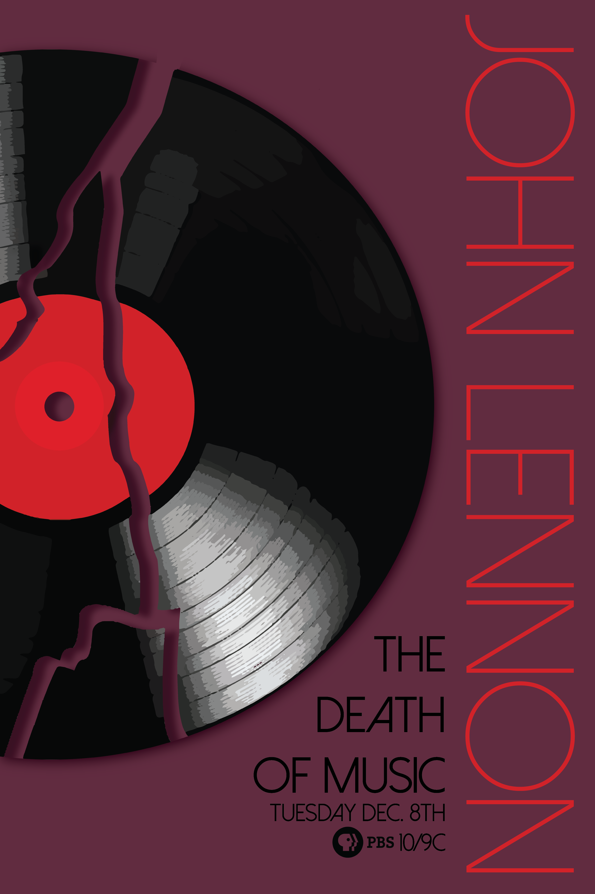

The Death of Music

This PBS documentary poster uses deep reds and blacks to evoke a sense of solemn emotion within it's users. The broken record combined with the subtitle of the documentary, "The Death of Music", gives the viewer a sense of what the documentary is about, the fact that many people felt a great loss when John Lennon had been killed, despite not knowing him.